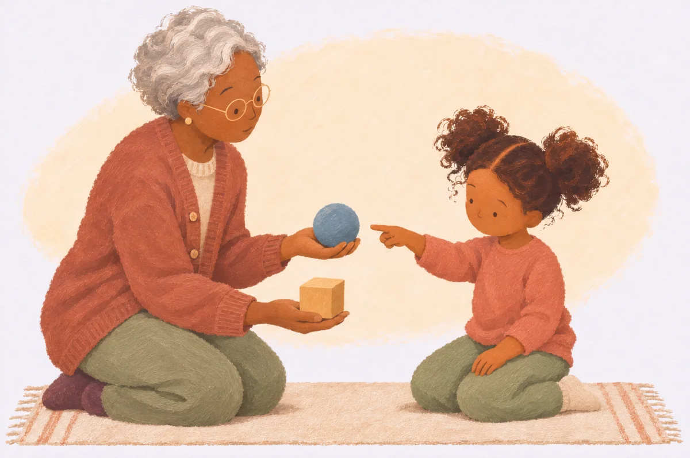

Mude uma resposta de Lia
Três ideias cabem em 5 minutos e usam o brinquedo que vocês têm.

Uma escolha, sem interrogatório

Brincar ao lado, sem tomar o brinquedo

Cinco minutos seguindo a brincadeira
O kit muda. Entra a ideia que usa papel; as de brinquedo saem.

Um desenho que a criança conduz
Entrou porque usa papel.
As mesmas ideias, com um ajuste. Uma delas ganha uma adaptação.
Uma escolha, sem interrogatório
Brincar ao lado, sem tomar o brinquedo
Cinco minutos seguindo a brincadeira
Adaptação: volume baixo e poucos comentários.
Nada cabe em 2 minutos neste desafio. O app diz isso, em vez de empurrar outra coisa.
Sem sugestão para 2 minutos
Dá para ver outro desafio ou voltar quando houver 5 minutos.